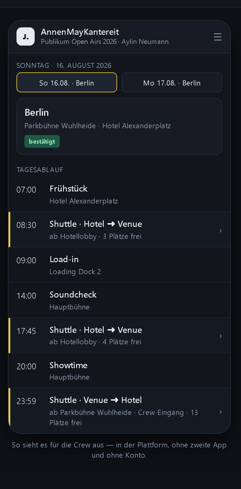
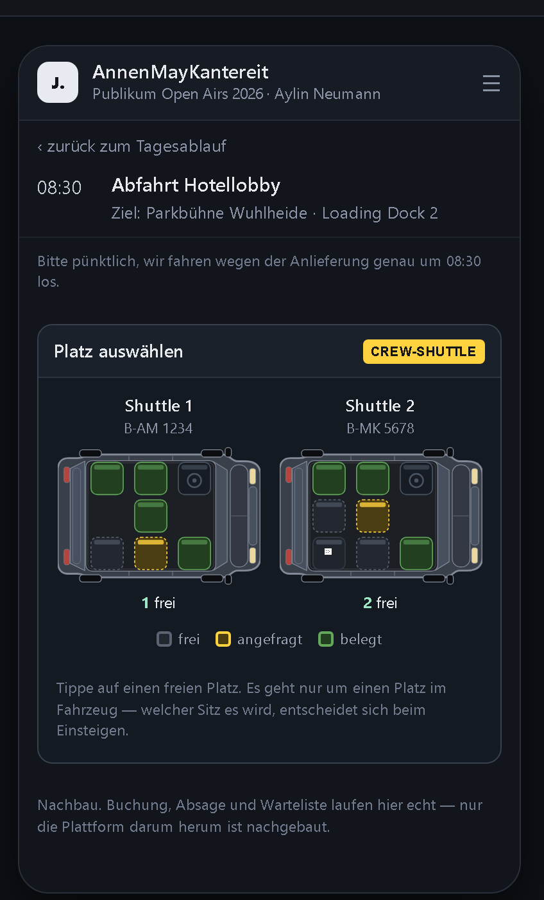
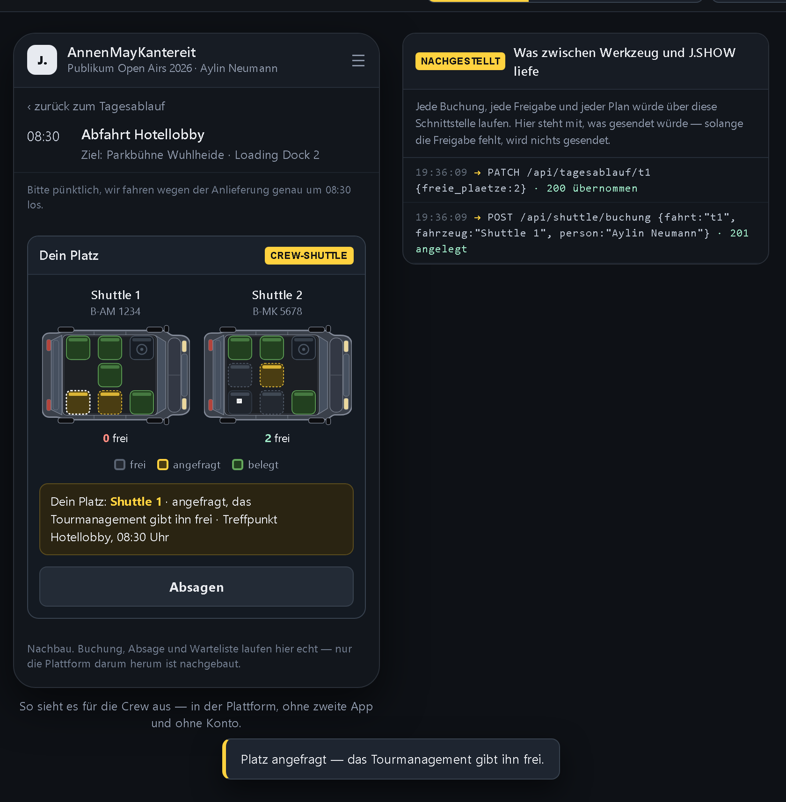
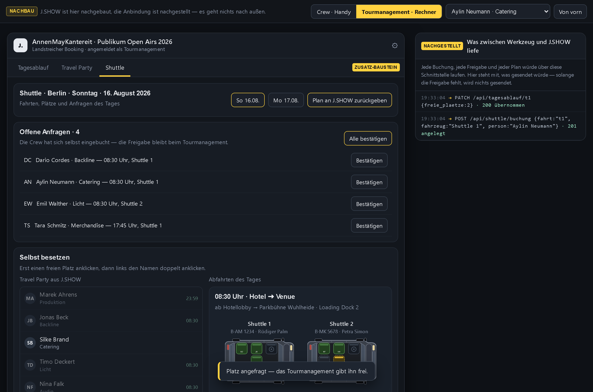
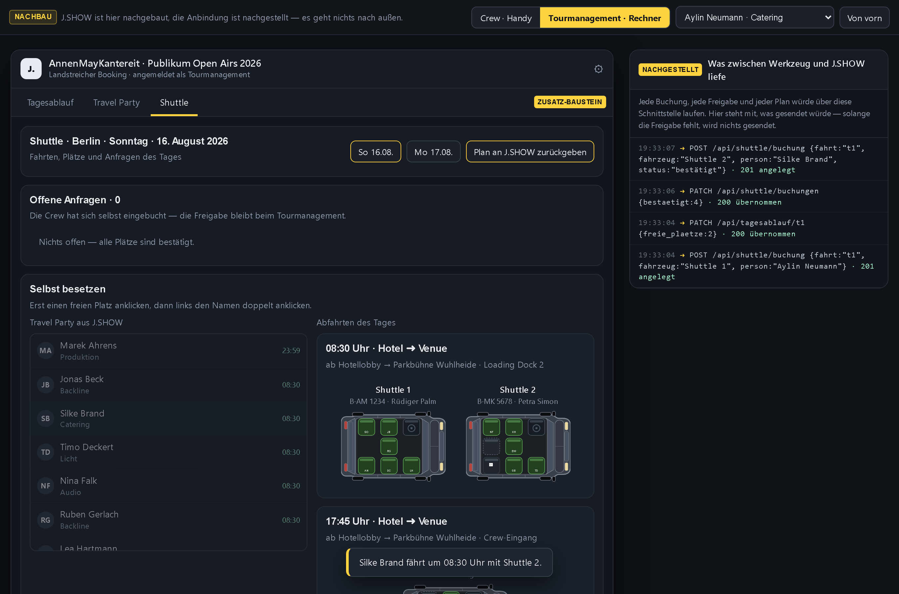
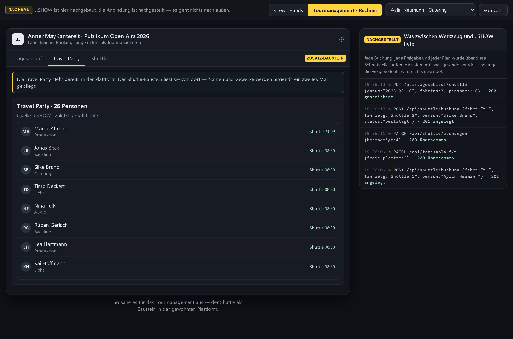
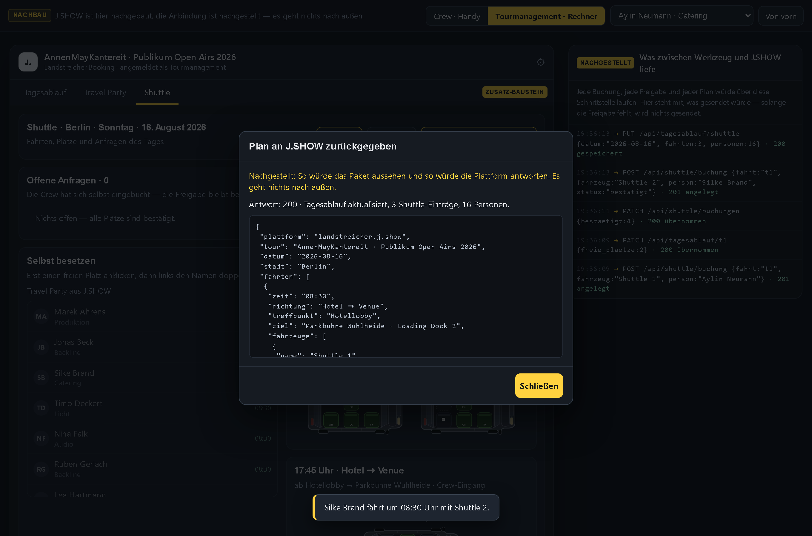

Dieselbe Shuttle-Planung wie gehabt — nur sitzt sie diesmal dort, wo die Crew ohnehin jeden Morgen nachschaut: im Tagesablauf von J.SHOW.
Vorführstand · August 2026 · Beispiel: AnnenMayKantereit, Publikum Open Airs 2026 · Die Plattform ist nachgebaut, die Anbindung nachgestellt.
Darunter ist es dasselbe Werkzeug: dieselben Fahrzeuge, dieselben Plätze, dieselbe Freigabe durch das Tourmanagement. Man kann mit Weg 1 anfangen und später auf Weg 2 wechseln — die Daten bleiben.
Der Shuttle-Eintrag trägt sich selbst ein: Uhrzeit, Richtung, Treffpunkt — und wie viele Plätze gerade noch frei sind.
Wer schon gebucht hat, sieht es direkt in der Zeile: angefragt oder bestätigt.
Nachbau Die Plattform drumherum ist nachgebaut. Buchen, absagen und nachrücken laufen aber wirklich — man kann es anklicken.

Ein Tipp auf den Eintrag öffnet die Fahrzeuge — von oben, Dach weg, Front rechts. Grün ist belegt, gelb gestrichelt angefragt, gestrichelt und leer ist frei.
Es geht immer nur um einen Platz im Fahrzeug. Welcher Sitz es wird, entscheidet sich beim Einsteigen.
Kein Konto, keine App, kein Link aus einer Gruppe: die Crew ist ja schon angemeldet.

Nach dem Tippen steht der eigene Platz oben: Fahrzeug, Treffpunkt, Uhrzeit. Solange das Tourmanagement nicht freigegeben hat, bleibt er gelb.
Absagen geht mit einem Knopf — dann rückt die Warteliste nach.
Rechts läuft mit, was dabei an die Plattform ginge. In dieser Fassung wird nichts gesendet; die Zeilen zeigen nur, was später über die Schnittstelle liefe.

Alle Anfragen des Tages stehen in einer Liste: wer, welches Gewerk, welche Abfahrt, welches Fahrzeug. Einzeln bestätigen oder alle auf einmal.
Der Shuttle ist dabei ein Baustein in der Plattform, kein zweites Programm daneben — Tagesablauf und Travel Party sind dieselben wie immer.

Links die Travel Party aus J.SHOW, rechts die Abfahrten mit ihren Plätzen. Freien Platz anklicken, Namen doppelt anklicken — die Person ist eingeteilt.

Crew, Gewerke, Telefonnummern: alles gepflegt in der Plattform. Der Shuttle liest sie von dort und schreibt sie nirgends ein zweites Mal.
Kommt jemand dazu oder fällt aus, ändert sich das an einer einzigen Stelle — und der Shuttle weiß es beim nächsten Abgleich.

Ein Knopf gibt den Plan des Tages zurück: Abfahrten, Fahrzeuge mit Kennzeichen, Fahrer mit Telefonnummer und wer mitfährt.
Damit sieht auch jemand, der das Shuttle-Fenster nie öffnet, im Tagesablauf, was läuft.
nachgestellt Antwort und Paket sind in dieser Fassung erfunden. Es entsteht keine Verbindung, solange die Freigabe fehlt.

In Stufen: heute läuft das Werkzeug eigenständig · Stufe 2 liest die Stammdaten aus J.SHOW · Stufe 3 schreibt den Plan zurück und hängt den Shuttle in den Tagesablauf. Jede Stufe ist für sich nutzbar.
Eine Show, drei Abfahrten, die echte Crew-Liste. Erst mit dem Weg über die Gruppe, und sobald der Zugang steht, derselbe Tag noch einmal direkt in J.SHOW. Danach entscheidet ihr, welche Tür bleibt.
Fragen und Rückmeldungen jederzeit — auch zu Wünschen, die hier noch fehlen.